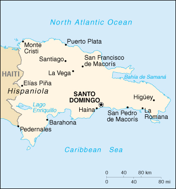

|
Dominican Republic | |
| Introduction Geography People Government Economy Communications Transportation Military Transnational Issues | ||
|  | ||
| Dominican Republic | Introduction | Top of Page |
| Background: | A legacy of unsettled, mostly non-representative, rule for much of the 20th century was brought to an end in 1996 when free and open elections ushered in a new government. |
| Dominican Republic | Geography | Top of Page |
| Location: | Caribbean, eastern two-thirds of the island of Hispaniola, between the Caribbean Sea and the North Atlantic Ocean, east of Haiti |
| Geographic coordinates: | 19 00 N, 70 40 W |
| Map references: | Central America and the Caribbean |
| Area: |
total:
48,730 sq km
land: 48,380 sq km water: 350 sq km |
| Area - comparative: | slightly more than twice the size of New Hampshire |
| Land boundaries: |
total:
275 km
border countries: Haiti 275 km |
| Coastline: | 1,288 km |
| Maritime claims: |
contiguous zone:
24 NM
continental shelf: 200 NM or to the edge of the continental margin exclusive economic zone: 200 NM territorial sea: 6 NM |
| Climate: | tropical maritime; little seasonal temperature variation; seasonal variation in rainfall |
| Terrain: | rugged highlands and mountains with fertile valleys interspersed |
| Elevation extremes: |
lowest point:
Lago Enriquillo -46 m
highest point: Pico Duarte 3,175 m |
| Natural resources: | nickel, bauxite, gold, silver |
| Land use: |
arable land:
21%
permanent crops: 9% permanent pastures: 43% forests and woodland: 12% other: 15% (1993 est.) |
| Irrigated land: | 2,300 sq km (1993 est.) |
| Natural hazards: | lies in the middle of the hurricane belt and subject to severe storms from June to October; occasional flooding; periodic droughts |
| Environment - current issues: | water shortages; soil eroding into the sea damages coral reefs; deforestation; Hurricane Georges damage |
| Environment - international agreements: |
party to:
Biodiversity, Climate Change, Desertification, Endangered Species, Hazardous Wastes, Marine Dumping, Marine Life Conservation, Nuclear Test Ban, Ozone Layer Protection, Ship Pollution
signed, but not ratified: Law of the Sea |
| Geography - note: | shares island of Hispaniola with Haiti (eastern two-thirds is the Dominican Republic, western one-third is Haiti) |
| Dominican Republic | People | Top of Page |
| Population: | 8,581,477 (July 2001 est.) |
| Age structure: |
0-14 years:
34.11% (male 1,495,477; female 1,431,406)
15-64 years: 60.99% (male 2,664,679; female 2,569,398) 65 years and over: 4.9% (male 199,240; female 221,277) (2001 est.) |
| Population growth rate: | 1.63% (2001 est.) |
| Birth rate: | 24.77 births/1,000 population (2001 est.) |
| Death rate: | 4.7 deaths/1,000 population (2001 est.) |
| Net migration rate: | -3.81 migrant(s)/1,000 population (2001 est.) |
| Sex ratio: |
at birth:
1.05 male(s)/female
under 15 years: 1.04 male(s)/female 15-64 years: 1.04 male(s)/female 65 years and over: 0.9 male(s)/female total population: 1.03 male(s)/female (2001 est.) |
| Infant mortality rate: | 34.67 deaths/1,000 live births (2001 est.) |
| Life expectancy at birth: |
total population:
73.44 years
male: 71.34 years female: 75.64 years (2001 est.) |
| Total fertility rate: | 2.97 children born/woman (2001 est.) |
| HIV/AIDS - adult prevalence rate: | 2.8% (1999 est.) |
| HIV/AIDS - people living with HIV/AIDS: | 130,000 (1999 est.) |
| HIV/AIDS - deaths: | 4,900 (1999 est.) |
| Nationality: |
noun:
Dominican(s)
adjective: Dominican |
| Ethnic groups: | white 16%, black 11%, mixed 73% |
| Religions: | Roman Catholic 95% |
| Languages: | Spanish |
| Literacy: |
definition:
age 15 and over can read and write
total population: 82.1% male: 82% female: 82.2% (1995 est.) |
| Dominican Republic | Government | Top of Page |
| Country name: |
conventional long form:
Dominican Republic
conventional short form: none local long form: Republica Dominicana local short form: none |
| Government type: | representative democracy |
| Capital: | Santo Domingo |
| Administrative divisions: | 29 provinces (provincias, singular - provincia) and 1 district* (distrito); Azua, Baoruco, Barahona, Dajabon, Distrito Nacional*, Duarte, Elias Pina, El Seibo, Espaillat, Hato Mayor, Independencia, La Altagracia, La Romana, La Vega, Maria Trinidad Sanchez, Monsenor Nouel, Monte Cristi, Monte Plata, Pedernales, Peravia, Puerto Plata, Salcedo, Samana, Sanchez Ramirez, San Cristobal, San Juan, San Pedro de Macoris, Santiago, Santiago Rodriguez, Valverde |
| Independence: | 27 February 1844 (from Haiti) |
| National holiday: | Independence Day, 27 February (1844) |
| Constitution: | 28 November 1966 |
| Legal system: | based on French civil codes |
| Suffrage: |
18 years of age, universal and compulsory; married persons regardless of age
note: members of the armed forces and police cannot vote |
| Executive branch: |
chief of state:
President Rafael Hipolito MEJIA Dominguez (since 16 August 2000); Vice President Milagros ORTIZ-BOSCH (since 16 August 2000); note - the president is both the chief of state and head of government
head of government: President Rafael Hipolito MEJIA Dominguez (since 16 August 2000); Vice President Milagros ORTIZ-BOSCH (since 16 August 2000); note - the president is both the chief of state and head of government cabinet: Cabinet nominated by the president elections: president and vice president elected on the same ticket by popular vote for four-year term; election last held 16 May 2000 (next to be held NA May 2004) election results: Raphael Hipolito MEJIA Dominguez elected president; percent of vote - Rafael Hipolito MEJIA Dominguez (PRD) 49.87%, Danilo MEDINA (PLD) 24.95%, Joaquin BALAGUER (PRSC) 24.6% |
| Legislative branch: |
bicameral National Congress or Congreso Nacional consists of the Senate or Senado (30 seats; members are elected by popular vote to serve four-year terms) and the Chamber of Deputies or Camara de Diputados (149 seats; members are elected by popular vote to serve four-year terms)
elections: Senate - last held 16 May 1998 (next to be held NA May 2002); Chamber of Deputies - last held 16 May 1998 (next to be held NA May 2002) election results: Senate - percent of vote by party - NA%; seats by party - PRD 24, PLD 3, PRSC 3; Chamber of Deputies - percent of vote by party - NA%; seats by party - PRD 83, PLD 49, PRSC 17 |
| Judicial branch: | Supreme Court or Corte Suprema (judges are elected by a Council made up of members of the legislative and executive branches with the president presiding) |
| Political parties and leaders: | Dominican Liberation Party or PLD [Leonel FERNANDEZ Reyna]; Dominican Revolutionary Party or PRD [Hatuey DE CAMPS]; Social Christian Reformist Party or PRSC [Joaquin BALAGUER Ricardo] |
| Political pressure groups and leaders: | Collective of Popular Organizations or COP |
| International organization participation: | ACP, Caricom (observer), ECLAC, FAO, G-11, G-77, IADB, IAEA, IBRD, ICAO, ICFTU, ICRM, IDA, IFAD, IFC, IFRCS, IHO, ILO, IMF, IMO, Intelsat, Interpol, IOC, IOM, ISO (subscriber), ITU, LAES, LAIA (observer), NAM (observer), OAS, OPANAL, OPCW, PCA, UN, UNCTAD, UNESCO, UNIDO, UPU, WCL, WFTU, WHO, WIPO, WMO, WToO, WTrO |
| Diplomatic representation in the US: |
chief of mission:
Ambassador Roberto Bienvenido SALADIN-SELIN
chancery: 1715 22nd Street NW, Washington, DC 20008 telephone: [1] (202) 332-6280 FAX: [1] (202) 265-8057 consulate(s) general: Boston, Chicago, Mayaguez (Puerto Rico), Miami, New Orleans, New York, Philadelphia, San Francisco, and San Juan (Puerto Rico) consulate(s): Houston, Jacksonville, Mobile, and Ponce (Puerto Rico) |
| Diplomatic representation from the US: |
chief of mission:
Ambassador Charles T. MANATT
embassy: corner of Calle Cesar Nicolas Penson and Calle Leopoldo Navarro, Santo Domingo mailing address: Unit 5500, APO AA 34041-5500 telephone: [1] (809) 221-2171 FAX: [1] (809) 686-7437 |
| Flag description: | a centered white cross that extends to the edges divides the flag into four rectangles - the top ones are blue (hoist side) and red, and the bottom ones are red (hoist side) and blue; a small coat of arms is at the center of the cross |
| Dominican Republic | Economy | Top of Page |
| Economy - overview: | The Dominican economy experienced dramatic growth over the last decade, even though the economy was hit hard by Hurricane Georges in 1998. Although the country has long been viewed primarily as an exporter of sugar, coffee, and tobacco, in recent years the service sector has overtaken agriculture as the economy's largest employer, due to growth in tourism and free trade zones. The country suffers from marked income inequality; the poorest half of the population receives less than one-fifth of GNP, while the richest ten percent enjoy 40% of national income. In December 2000, the new MEJIA administration passed broad new tax legislation which it hopes will provide enough revenue to offset rising oil prices and to service foreign debt. |
| GDP: | purchasing power parity - $48.3 billion (2000 est.) |
| GDP - real growth rate: | 8% (2000 est.) |
| GDP - per capita: | purchasing power parity - $5,700 (2000 est.) |
| GDP - composition by sector: |
agriculture:
11.3%
industry: 32.2% services: 56.5% (1999 est.) |
| Population below poverty line: | 25% (1999 est.) |
| Household income or consumption by percentage share: |
lowest 10%:
1.6%
highest 10%: 39.6% (1989) |
| Inflation rate (consumer prices): | 7.9% (2000 est.) |
| Labor force: | 2.3 million - 2.6 million |
| Labor force - by occupation: | services and government 58.7%, industry 24.3%, agriculture 17% (1998 est.) |
| Unemployment rate: | 13.8% (1999 est.) |
| Budget: |
revenues:
$2.3 billion
expenditures: $2.9 billion, including capital expenditures of $867 million (1999 est.) |
| Industries: | tourism, sugar processing, ferronickel and gold mining, textiles, cement, tobacco |
| Industrial production growth rate: | 8% (2000 est.) |
| Electricity - production: | 7.29 billion kWh (1999) |
| Electricity - production by source: |
fossil fuel:
87.19%
hydro: 12.4% nuclear: 0% other: 0.41% (1999) |
| Electricity - consumption: | 6.78 billion kWh (1999) |
| Electricity - exports: | 0 kWh (1999) |
| Electricity - imports: | 0 kWh (1999) |
| Agriculture - products: | sugarcane, coffee, cotton, cocoa, tobacco, rice, beans, potatoes, corn, bananas; cattle, pigs, dairy products, beef, eggs |
| Exports: | $5.8 billion (f.o.b., 2000) |
| Exports - commodities: | ferronickel, sugar, gold, silver, coffee, cocoa, tobacco, meats |
| Exports - partners: | US 66.1%, Netherlands 7.8%, Canada 7.6%, Russia 7.4%, UK 4.5% (1999 est.) |
| Imports: | $9.6 billion (f.o.b., 2000 est.) |
| Imports - commodities: | foodstuffs, petroleum, cotton and fabrics, chemicals and pharmaceuticals |
| Imports - partners: | US 25.7%, Venezuela 9.2%, Mexico 4%, Japan 3%, Panama 2.6% (1999 est.) |
| Debt - external: | $4.7 billion (2000 est.) |
| Economic aid - recipient: | $239.6 million (1995) |
| Currency: | Dominican peso (DOP) |
| Currency code: | DOP |
| Exchange rates: | Dominican pesos per US dollar - 16.888 (January 2001), 16.415 (2000), 16.033 (1999), 15.267 (1998), 14.265 (1997), 13.775 (1996) |
| Fiscal year: | calendar year |
| Dominican Republic | Communications | Top of Page |
| Telephones - main lines in use: | 709,000 (1997) |
| Telephones - mobile cellular: | 130,149 (1997) |
| Telephone system: |
general assessment:
NA
domestic: relatively efficient system based on islandwide microwave radio relay network international: 1 coaxial submarine cable; satellite earth station - 1 Intelsat (Atlantic Ocean) |
| Radio broadcast stations: | AM 120, FM 56, shortwave 4 (1998) |
| Radios: | 1.44 million (1997) |
| Television broadcast stations: | 25 (1997) |
| Televisions: | 770,000 (1997) |
| Internet country code: | .do |
| Internet Service Providers (ISPs): | 24 (2000) |
| Internet users: | 25,000 (1999) |
| Dominican Republic | Transportation | Top of Page |
| Railways: |
total:
757 km
standard gauge: 375 km 1.435-m gauge (Central Romana Railroad) narrow gauge: 142 km 0.762-m gauge (Dominican Republic Government Railway) note: 240 km operated by sugar companies in various gauges (0.558-m, 0.762-m, 1.067-m gauges) (2000) |
| Highways: |
total:
12,600 km
paved: 6,224 km unpaved: 6,376 km (1996) |
| Waterways: | none |
| Pipelines: | crude oil 96 km; petroleum products 8 km |
| Ports and harbors: | Barahona, La Romana, Puerto Plata, San Pedro de Macoris, Santo Domingo |
| Merchant marine: |
total:
1 ship (1,000 GRT or over) totaling 1,587 GRT/1,165 DWT
ships by type: cargo 1 (2000 est.) |
| Airports: | 29 (2000 est.) |
| Airports - with paved runways: |
total:
13
over 3,047 m: 3 2,438 to 3,047 m: 2 1,524 to 2,437 m: 4 914 to 1,523 m: 3 under 914 m: 1 (2000 est.) |
| Airports - with unpaved runways: |
total:
16
1,524 to 2,437 m: 2 914 to 1,523 m: 4 under 914 m: 10 (2000 est.) |
| Dominican Republic | Military | Top of Page |
| Military branches: | Army, Navy, Air Force, National Police |
| Military manpower - military age: | 18 years of age |
| Military manpower - availability: | males age 15-49: 2,281,035 (2001 est.) |
| Military manpower - fit for military service: | males age 15-49: 1,430,776 (2001 est.) |
| Military manpower - reaching military age annually: | males: 87,404 (2001 est.) |
| Military expenditures - dollar figure: | $180 million (FY98) |
| Military expenditures - percent of GDP: | 1.1% (FY98) |
| Dominican Republic | Transnational Issues | Top of Page |
| Disputes - international: | none |
| Illicit drugs: | transshipment point for South American drugs destined for the US and Europe; has become a transshipment point for ecstasy from the Netherlands and Belgium destined for US and Canada |
{kind=link}
{kind=link}